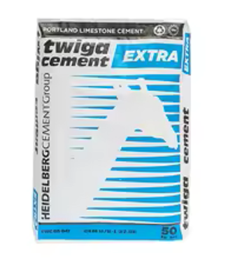

Our Products
Quality cement materials for your construction needs. Choose the best for your projects!

cimerwa Cement (42.5)
High-quality cement for construction and building.

Twiga Cement (42.5)
Stronger and more durable for demanding construction projects.

CIMERWA Cement (32.5)
Reliable cement from CIMERWA for both residential and commercial buildings.

TWIGA Cement (32.5)
Trusted by builders for its consistent quality and strength.